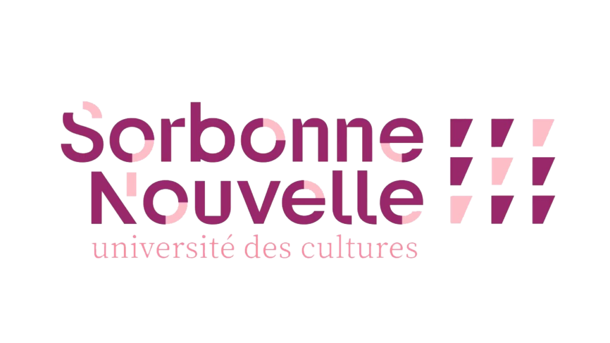

Lucy-Lou Agard
Licence 3 de Lettres Moderne

Mon CV des trois dernières années :
| année universitaire | Statut |
|---|
| 2024-2025 | Des ours |
| 2023-2024 | Des lépoard |
| 2022-2023 | Des crevettes |
Voici les cinq derniers livres que j'ai lu :
- Comment élever les crevette, Monsieur Caviar
- La religieuse, Diderot
- Histoire d'une grecque moderne, Prevost
- La princesse de Montpensier, Lafayette
- La vie de Marianne, Marivaux